谨以此文献给在HashMap家族中迷失的岁月。。。。。
什么是Hash
Hash，即散列函数，或者叫哈希函数。它可以任意长度的输入通过算法转换成一个定长的输出，这个输出就是散列值，或者叫哈希值。在后文中称为Hash值。
因为是无穷对应有限，则必有多个输入对应相同的输出，即散列冲突，或叫哈希冲突。
哈希算法有以下特点：
- 从输出无法推导出输入。
- 散列冲突的概率要尽可能小。
数据敏感，对输入的简单修改会导致输出的巨大差异。
为什么不能使用基本数据类型
HashMap存储元素首先调用hashCode()方法，计算其Hash值。若相同，则认为是相同的数据，不存储。如果Hash值不同，则再调用其equals()方法进行比较，若返回true则认为是相同对象，不存储。若返回false则存储。
因此如果使用基本数据类型，则无法调用hashCode()或equals()方法。而包装类有这些方法。
其次，而在HashMap设计中，使用了泛型约束key和value的类型，即HashMap<K, V>;而泛型在Java中必须是Object类型的。而基本数据类型不是Object类型，因此不可以作为键值。
虽然在使用中可以使用map.put(100, “java”)以添加值，但实际是自动装箱机制将100变为了Integer类型。
HashMap是如何计算Hash的？
static final int hash(Object key) {
int h;
return (key == null) ? 0 : (h = key.hashCode()) ^ (h >>> 16);
}
通过Key的hashCode()方法，获得一个int类型的散列值。之后再与散列值右移16位的结果进行异或(^)运算。
右移16位是因为int类型为4个字节，32个比特，右移16位可以让将Hash值的高16位和低16位进行异或运算，然后将高16位的结果右移16位，得到一个较为均匀的Hash值，这样可以减少Hash冲突的发生。
HashMap
HashMap的使用
简单使用
import java.util.HashMap;
public class HashMapUse {
public static void main(String[] args) {
HashMap<String, String> map = new HashMap<>(); //创建HashMap
map.put("key", "value"); // 存入值
map.put("erick", "ren");
map.put(null, "yunliyunwai");
map.get("key"); // 取出并打印值 -> value
map.isEmpty(); // 检查map是否为空 -> false
map.containsKey("key"); // 检查map是否存在该键 -> true
map.containsValue("valuee"); // 检查map是否存在该值 -> false
map.values(); // map中所有值 -> [ren, yunliyunwai, value]
map.size(); // map大小 -> 3
map.keySet(); // map中所有键 -> [erick, null, key]
map.entrySet(); // map中所有键与值 -> [erick=ren, null=yunliyunwai, key=value]
HashMap<String, String> map2 = new HashMap<>();
map2.put("nihao", "hello");
map.putAll(map2); // 将新map2追加到map中
System.out.println(map); // -> {erick=ren, null=yunliyunwai, nihao=hello, key=value}
map.remove("erick"); // 删除map中ren键（包括值）
map.remove("key", "valuee"); // 另一种方法(JDK1.8新增)，但是请注意，如果key与value对不上的话，是不会删除成功的。
System.out.println(map); // -> {null=yunliyunwai, nihao=hello, key=value}
Object map3 = map.clone(); // 克隆map数组。注意：此处map3必须是Object类型
System.out.println(map3); // -> {null=yunliyunwai, nihao=hello, key=value}
map.clear(); // 清空map
System.out.println(map); // -> {}
}
}
JDK1.8新增方法
public class JDK8HashMap {
public static void main(String[] args) {
HashMap<String, Integer> map = new HashMap<>();
map.put("key", 100);
map.putIfAbsent("key", 200); // 若map中不存在key即插入，若存在则不作处理
map.putIfAbsent("newkey", 300);
System.out.println(map); // -> {newkey=300, key=100}
map.compute("key", (key, value)-> value - value * 10 / 100); // 重新计算并赋值key,注意：这里使用了Lambda表达式，本质上这里应该是一个BiFunction函数式接口
map.compute("abc", (key, value)-> value - value * 10 / 100); // Exception in thread "main" java.lang.NullPointerException: Cannot invoke "java.lang.Integer.intValue()" because "value" is null
System.out.println(map); // -> {newkey=300, key=90}
map.computeIfAbsent("new_key", key -> 200); //当key不存在时，会将该键值对添加到map中
System.out.println(map); // -> {new_key=200, newkey=300, key=90}
map.computeIfAbsent("new_key", key -> 10); // 当key存在时，不作操作
System.out.println(map); // -> {new_key=200, newkey=300, key=90}
map.computeIfPresent("asdasd", (key, value) -> value - value * 20 / 100); // 当键存在时才会执行，否则忽略。
System.out.println(map); // -> {new_key=200, newkey=300, key=90}
}
}
HashMap的特点
- HashMap是无序的数据结构。LinkedHashMap是有序的。
- HashMap查询效率最高的数据结构，但这是
以空间为代价换来的（以空间换时间）。 - HashMap可以将null作为键和值。
请注意：ConcurrentHashMap不可以将null作为键或者值的。 - HashMap不论任何版本都线程不安全。
HashMap数据结构
JDK1.7
在JDK1.7中，HashMap采用数组+链表的形式实现。
在每次插入数据是，会根据key计算对应的Hash值，利用位运算将Hash值转化为对应数组下标，根据下标找到数组中的对应位置。若位置对应的Entry对象不为空，则以头插的方式将数据插入到链表中；若为空，则直接将数据插入到Entry数组中。
头插是什么意思？
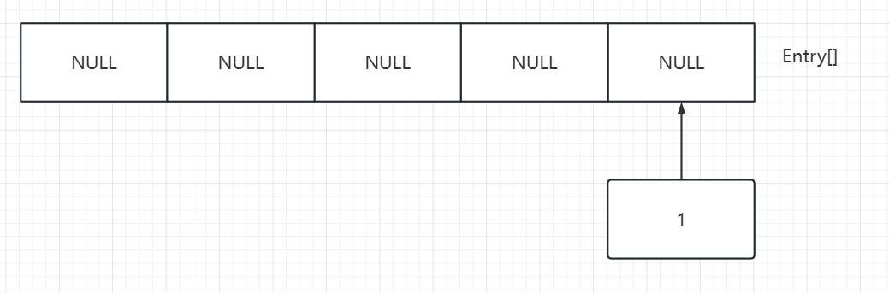
此时有一个代号为1的数据计算Hash得出下标欲加入HashMap中，此时数组对应位置为空，则顺利插入。
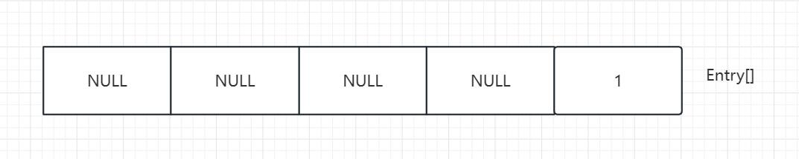
此时又有代号为2的数据计算，欲加入到与1相同的位置，但对应位置不为空，则用头插方式插入。
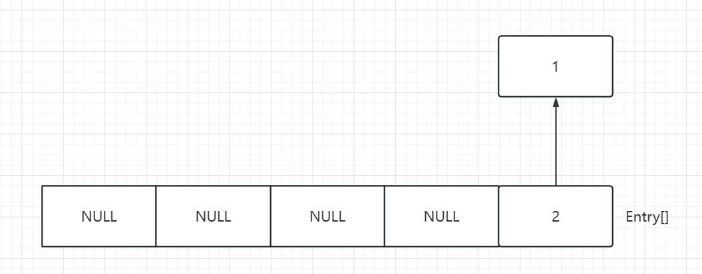
此时2指向1。即插入到了链表的“头部”。
重复上述操作，得到如下HashMap。
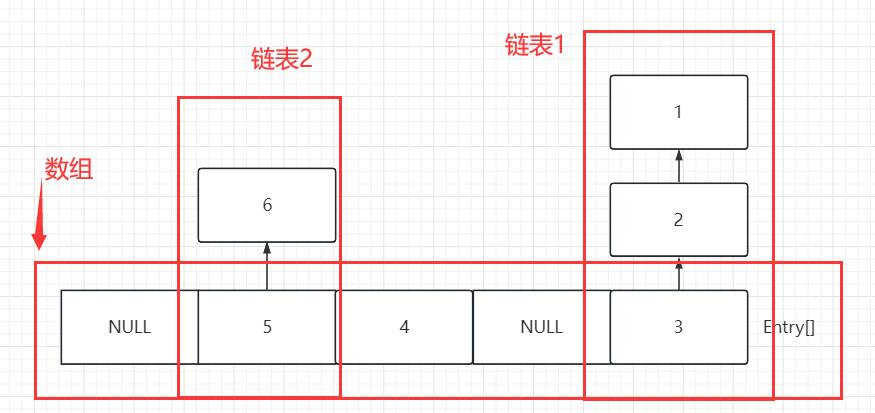
而在查找时，Hash值只能定位到数组下标，而必须循环查找所有节点，所以JDK1.7中HashMap get()方法的时间复杂度为O(N)。
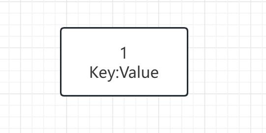
需要注意的是，这其中每个数据都存储一个键值对。这每一个键值对叫Entry，但JDK1.8后叫Node。
JDK1.8
JDK1.8的HashMap数据结构与1.7基本相同，但在链表长度大于8，且Node[]数组（在1.7叫Entry[]）长度大于64时，会将该部分链表转化为红黑树。
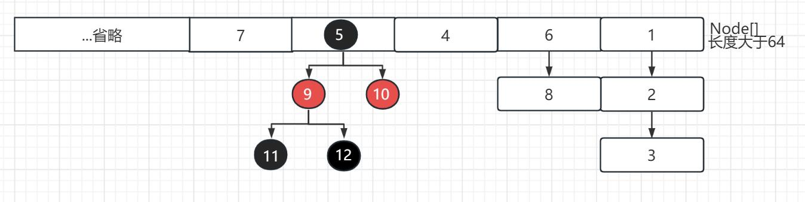
将链表转换成红黑树前会判断，如果当前数组的长度小于 64，那么会选择先进行数组扩容，而不是转换为红黑树，以减少搜索时间。
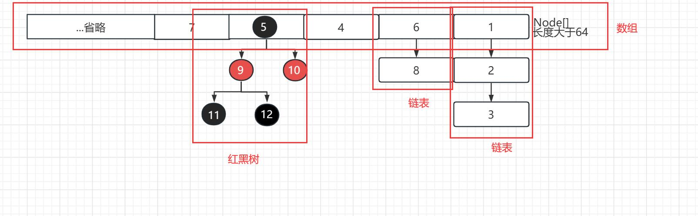
注意：当红黑树长度小于6时会退化成链表结构。
HashMap的扩容机制
扩容机制
如果HashMap存储的键值对数量超过阈值，则会进行扩容操作。
HashMap的扩容机制有以下步骤：
JDK1.7
- 创建一个新的Entry数组，长度为原来的2倍。(实质上是当前容量左移一位)（newtableSize = tableSize << 1）
- 将原来数组的每个元素重新计算Hash值并放入新的数组中。
JDK1.8
如何通过Hash值计算index
在代码中，计算index是这样的：
p = tab[i = (n - 1) & hash]
即：将数组长度-1并转化为二进制，再将二进制的Hash值做与(&)运算。
与运算简单来说即为：当两个都为1时为1，其余都是0。
例如：
现有Hash值10 0001 0101
数组长度为16，16-1=15的二进制为00 0000 01111
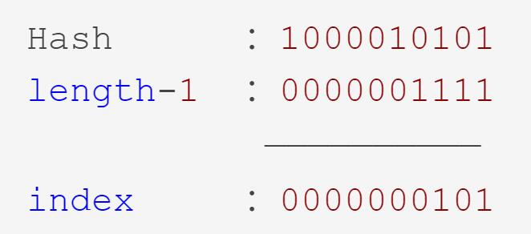
所得00 0000 0101 十进制为5，即数组索引为5。
高低位算法
JDK1.8中引入了高低位算法，其扩容时引用高低位机制。Node数组中某个位置的链表或者红黑树的结点扩容时，不再以1.7的方式计算索引位置，而是将Node结点的Hash值与旧数组长度进行与运算。如果计算出来的值为0，表示该结点为低位结点，将旧数组所有低位结点组合成一个新的Node链表，并赋值到新数组相同位置。如果计算出来的值不为0，表示该结点为高位结点，将旧数组所有高位结点组合成一个新的Node链表，赋值给新数组当前位置加上旧数组长度的位置。
例如：现在欲将上述例子中16扩容为32，则扩容后的length-1为31，即0001 1111。
Hash值对新容量计算索引值时，后四位不变(因为都是1)，唯一变化的是第五位，即从原来的0变为1。
上述例子中5索引的二进制值00 0000 0101，我们仍以1.7方法计算新索引值。
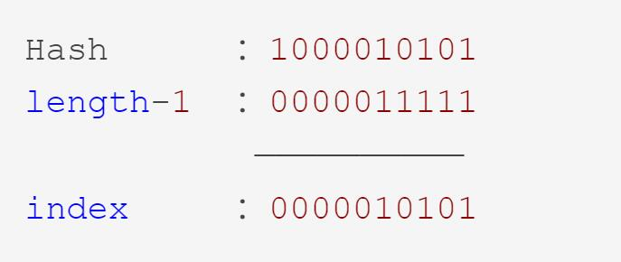
得到新索引值二进制为00 0001 0101二进制即为21，会发现，原索引值为5，加上旧数组长度（16）为21。
我们再将其与旧数组长度进行与运算。
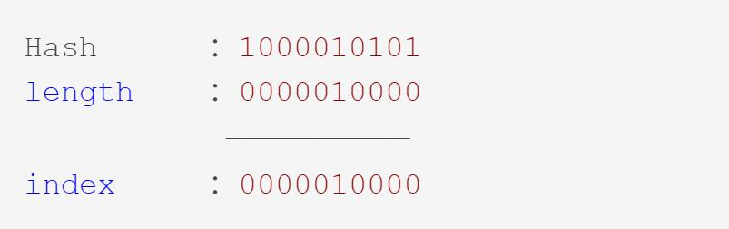
得到结果00 0001 0000十进制为16，不为0。所以它是高位节点。
再有一例子：10 0000 0101，经计算新旧索引都为5。通过旧长度与运算可得
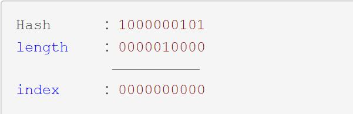
结果为0，所以它是低位结点。
扩容过程
- 创建新的Node数组，长度为原来的2倍。
- 依据规律直接按位计算高低位结点，并赋值到新数组对应结点。
为什么要采用高低位算法？
HashMap采用高低位算法主要是为了减少哈希冲突，提高哈希表的性能。(因为哈希冲突的部分可能会被重新匀到新的索引位置，而1.7冲突的部分全保留)
HashMap数组的长度是2的幂次方，因此它的长度减1的二进制表示是全1的，如1111、111111等，这样做异或运算后可以保证高位和低位的信息都被保留下来。最终的哈希值也比较均匀地分布在数组的不同位置上，减少哈希冲突的发生，提高了HashMap的性能。
负载因子(loadFactor)
负载因子在HashMap初始化时即指定。默认为0.75。
static final float DEFAULT_LOAD_FACTOR = 0.75f;
public HashMap() {
this.loadFactor = DEFAULT_LOAD_FACTOR;
}
同时，HashMap重载了HashMap：
public HashMap(int initialCapacity, float loadFactor) {
if (initialCapacity < 0)
throw new IllegalArgumentException("Illegal initial capacity: " +
initialCapacity);
if (initialCapacity > MAXIMUM_CAPACITY)
initialCapacity = MAXIMUM_CAPACITY;
if (loadFactor <= 0 || Float.isNaN(loadFactor))
throw new IllegalArgumentException("Illegal load factor: " +
loadFactor);
this.loadFactor = loadFactor;
this.threshold = tableSizeFor(initialCapacity);
}
负载因子是HashMap实例的容量与HashMap中键值对的数量之比，即：Node数量/容量。
当HashMap中的键值对的数量大于负载因子乘以容量时，HashMap的容量就会扩大两倍。
例如，此时HashMap容量为16，负载因子为0.75，则当HashMap中键值对数量大于12时就会进行扩容。
负载因子越高，HashMap中键值对的映射数量就越多，但是会出现可能的冲突。
负载因子越低，HashMap中键值对的映射数量就越少，但可以减少冲突的可能性。
负载因子为什么默认为0.75
阈值(threshold)=负载因子(loadFactor)x容量(capacity)。根据HashMap的扩容机制，他会保证容量(capacity)的值永远都是2的幂 为了保证负载因子x容量的结果是一个整数，这个值是0.75(3/4)比较合理，因为这个数和任何2的次幂乘积结果都是整数。
同时，0.75是一个经验值，它在时间和空间成本上提供了很好的折中。
JDK文档：
As a general rule, the default load factor (.75) offers a good tradeoff between time and space costs. Higher values decrease the space overhead but increase the lookup cost (reflected in most of the operations of the HashMap class, including get and put).
作为一般规则，默认负载因子（0.75）在时间和空间成本上提供了很好的折中。较高的值会降低空间开销，但提高查找成本（体现在大多数的HashMap类的操作，包括get和put）。
初始化容量大小
请注意：容量(capacity)是HashMap能够容纳的最大元素数量，而元素个数(size)是表示该HashMap已经拥有了多少个元素。
public HashMap(int initialCapacity, float loadFactor) {
if (initialCapacity < 0)
throw new IllegalArgumentException("Illegal initial capacity: " +
initialCapacity);
if (initialCapacity > MAXIMUM_CAPACITY)
initialCapacity = MAXIMUM_CAPACITY;
if (loadFactor <= 0 || Float.isNaN(loadFactor))
throw new IllegalArgumentException("Illegal load factor: " +
loadFactor);
this.loadFactor = loadFactor;
this.threshold = tableSizeFor(initialCapacity);
}
这段代码中initialCapacity即为HashMap的初始大小，默认值为16.
static final int DEFAULT_INITIAL_CAPACITY = 1 << 4; // aka 16
在定义时采用位运算，2的四次方，即16。
static final int MAXIMUM_CAPACITY = 1 << 30;
同时在源码中也定义了HashMap的最大容量，2的三十次方，即10,7374,1824。
初始化容量大小为什么默认是16
与负载因子相同，16也是一个经验值。
在HashMap的扩容机制中，每次扩容都是容量*2。
newThr = oldThr << 1;
16是2的整数次幂，可以保证在哈希计算时只需要进行位运算而不需要乘除法，提高计算效率。
其次，16的二进制为10000，在进行哈希计算时可以将哈希值的高四位作为数组下标，可以保证哈希值分布更加均匀，减少哈希冲突。
当然，8、4也是2的整数次幂，但考虑到默认负载因子0.75的值，8与4在分别插入第7对和第4对数据时就会发生扩容操作，反而会影响效率。
JDK1.7和1.8初始化容量的时机不同
在JDK 1.7和JDK 1.8中，HashMap初始化这个容量的时机不同。JDK 1.7中，在调用HashMap的构造函数定义HashMap的时候，就会进行容量的设定。而在JDK 1.8中，在第一次put操作时才进行这一操作。
阈值(threshold)
阈值表示HashMap在自动扩容之前可以容纳的键值对数量，阈值=负载因子*容量。当HashMap存储的键值对数量超过阈值时，HashMap就会自动扩容。
HashMap存储流程
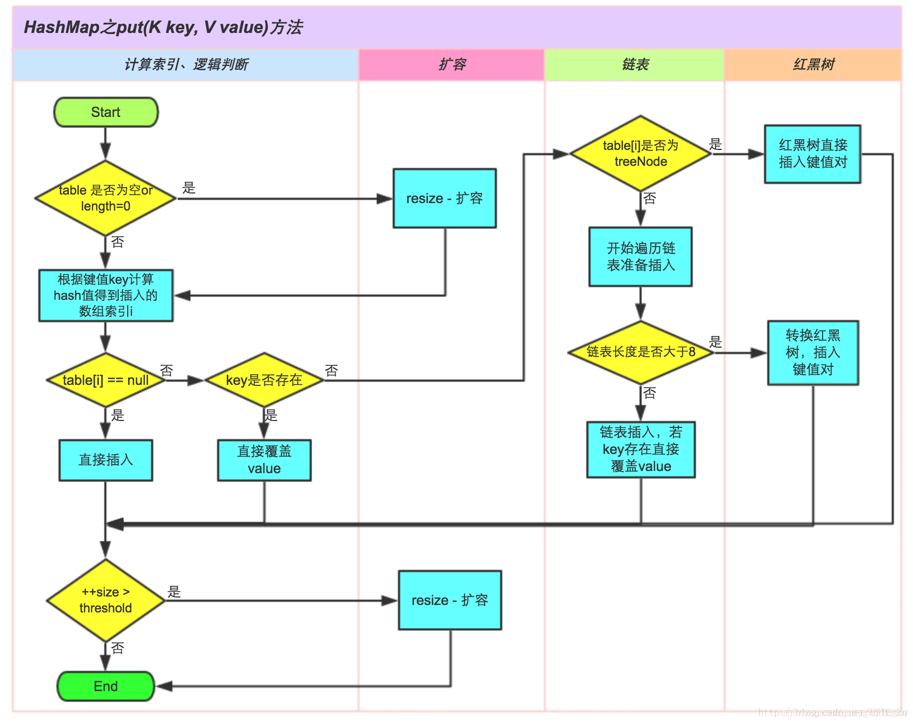
HashMap问题
为什么要用红黑树？
为了解决JDK1.8以前hash冲突所导致的链化严重的问题。因为链表结构的查询效率是非常低的，链表不可以使用下标访问，只能遍历，当链表过长时遍历效率极低，会导致性能退化到O(N)。所以采用红黑树，本质是一颗特殊的二叉排序树，可以将查询效率优化至O(logN)。
为什么还要使用链表？
为了避免红黑树的额外空间开销和时间开销。红黑树需要左旋，右旋，变色这些操作来保持平衡，在链表长度较小时，红黑树的额外空间开销和时间开销可能会超过链表的查询时间复杂度，因此在链表较短时使用链表可以减少不必要的开销。
为什么链表长度大于8转换为红黑树，小于6退化，而不是大于8转换，小于8退化？
防止频繁转换造成性能损失。
为什么HashMap是无序的？
HashMap实现基于哈希表，哈希表的特点是无序，而链表/红黑树的顺序是根据哈希值和插入顺序决定，所以HashMap没有顺序。
从理论上说，HashMap是按照数组Entry[] (Node[])进行遍历，并且遍历所有的链表。HashMap遍历时是有序的，但插入与遍历的顺序没有相关性，所以导致HashMap无序。
HashMap的底层数组长度为何总是2的n次幂？
- 使数据分布均匀，减少碰撞
- 当length为2的N次方的时候，索引计算：
h & (length-1) = h % length，直接使用位运算效率更高。
null是如何处理的？
HashMap对于键为null的情况，会将null的hash值设置为0，所以hash值为0的情况下，会被映射到数组的第0个索引位置。
在put()方法下：
if (key == null)
return putForNullKey(value);
putForNullkey()方法：
private V putForNullKey(V value) {
for (Entry<K,V> e = table[0]; e != null; e = e.next) {
if (e.key == null) {
V oldValue = e.value;
e.value = value;
e.recordAccess(this);
return oldValue;
}
}
modCount++;
addEntry(0, null, value, 0);
return null;
}
由此可知，在null为键的情况下，该Entry会插入到数组第0个索引位置。
HashMap计算Hash时为什么要右移16位
详见此处。
HashMap为什么使用红黑树而不是B+树
红黑树在插入、删除和查找等操作的时间复杂度都是O(log n)，而B+树的时间复杂度是O(logd n)，其中d是B+树的阶数，通常d比较大，因此B+树的操作速度相对较慢。其次，红黑树节点结构相对简单，占用内存空间小。
HashMap的线程安全问题
JDK1.7
1.7的头插法死循环(环状链)问题
JDK1.7采用头插法，在并发执行扩容环境的情况下会造成环状链(死循环)和数据丢失的问题。
发生线程安全主要是在扩容方法中，根源在transfer()方法中，其源码如下：
void transfer(Entry[] newTable, boolean rehash) {
int newCapacity = newTable.length;
for (Entry<K,V> e : table) {
while(null != e) {
Entry<K,V> next = e.next;
if (rehash) {
e.hash = null == e.key ? 0 : hash(e.key);
}
int i = indexFor(e.hash, newCapacity);
e.next = newTable[i];
newTable[i] = e;
e = next;
}
}
}
简单来说，死循环的发生主要是因为线程间对HashMap的更改不同步导致。
现有如下例子：
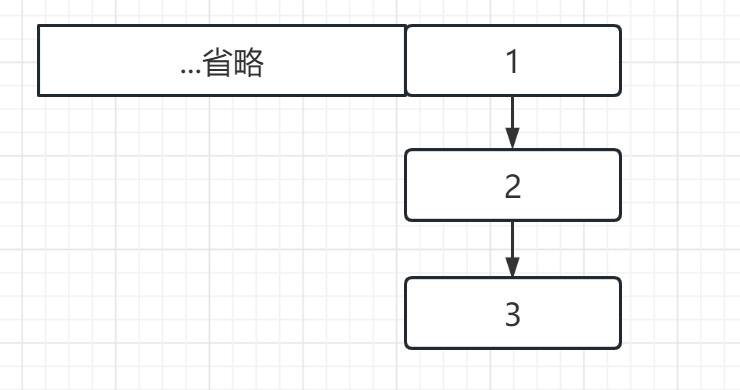
此时线程A(红色)、线程B(蓝色)对该HashMap进行扩容操作。
此时线程A与B的下一节点(A.next/B.next)都指向2。
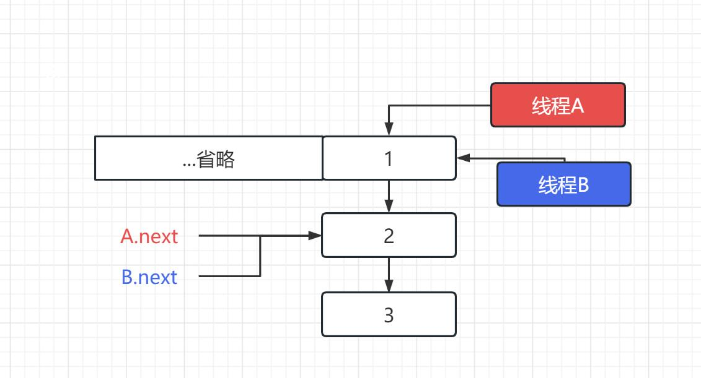
假设此时线程B时间片耗尽，进入休眠状态，线程A进行扩容，因为头插法的原因，所以导致最后的结果是这样的。(此时A已修改完成)
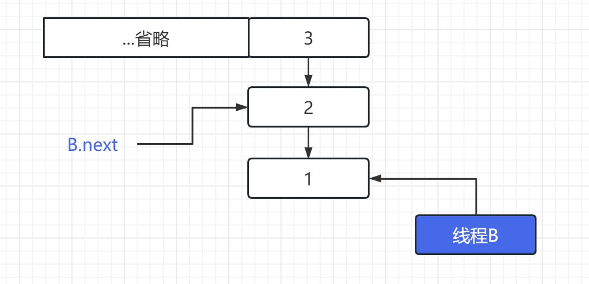
线程A已改变链表结构，但线程B不知道。此时线程B苏醒开始进行扩容。
此时死循环发生，线程B认为1是首节点，所以将1的next指向2，但实际上此时1已经是末节点。
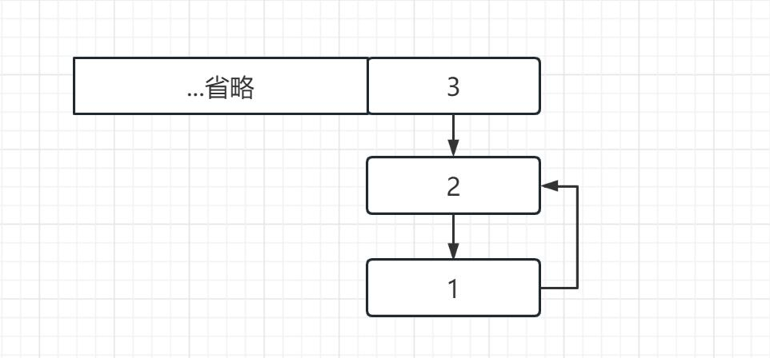
在这种结构下，get()方法访问到这个链表时，它会依次遍历3->2->1->2->1->2->…此时死循环发生。
JDK1.8
JDK1.8直接在resize函数中完成了数据迁移，并且使用尾插法以保证链表顺序的一致性，完全修复了死循环问题。
插入数据时数据丢失(覆盖插入)问题
当多线程操作HashMap时，可能会出现数据丢失的问题。
首先从putVal()方法源代码入手：
final V putVal(int hash, K key, V value, boolean onlyIfAbsent,
boolean evict) {
Node<K,V>[] tab; Node<K,V> p; int n, i;
if ((tab = table) == null || (n = tab.length) == 0)
n = (tab = resize()).length;
if ((p = tab[i = (n - 1) & hash]) == null) //判断哈希碰撞，如果没有碰撞就插入
tab[i] = newNode(hash, key, value, null);
else {
Node<K,V> e; K k;
if (p.hash == hash &&
((k = p.key) == key || (key != null && key.equals(k))))
e = p;
else if (p instanceof TreeNode)
e = ((TreeNode<K,V>)p).putTreeVal(this, tab, hash, key, value);
else {
for (int binCount = 0; ; ++binCount) {
if ((e = p.next) == null) {
p.next = newNode(hash, key, value, null);
if (binCount >= TREEIFY_THRESHOLD - 1) // -1 for 1st
treeifyBin(tab, hash);
break;
}
if (e.hash == hash &&
((k = e.key) == key || (key != null && key.equals(k))))
break;
p = e;
}
}
if (e != null) {
V oldValue = e.value;
if (!onlyIfAbsent || oldValue == null)
e.value = value;
afterNodeAccess(e);
return oldValue;
}
}
++modCount;
if (++size > threshold)
resize();
afterNodeInsertion(evict);
return null;
}
注释行代码是先判断哈希碰撞，现有线程A、B。若A在第六行判断结束时间片耗尽进入休眠状态，此时线程B插入同一位置数据。当A结束休眠继续运行时，不会再判断是否发生哈希碰撞，直接插入。这样就会导致线程B插入的数据被覆盖，造成数据丢失。
1.8也存在死循环问题
真的存在吗？？
public static void main(String[] args) {
HashMap<String, String> map = new HashMap<>();
new Thread(()->{
for (int i = 0; i < 1000000; i+=2) {
map.put(Integer.toString(i), Integer.toBinaryString(i));
if (i > 50000 && i % 10000 == 0){
System.out.println("put");
}
}
}, "A").start();
new Thread(()->{
for (int i = 1; i < 1000000; i+=2) {
map.put(Integer.toString(i), Integer.toBinaryString(i));
if (i > 50000 && i % 10000 == 0){
System.out.println("put");
}
}
}, "B").start();
while (Thread.activeCount() > 2){
Thread.yield();
}
System.out.println(map.size());
}
在这段代码中，我们以两个线程分别向map中加入10万条数据，并且如果插入次数超过5万，则每1万次报告一次插入以确认未进入死循环。
经过几次尝试后，程序无法正常结束。
使用jps和jstack查看线程运行状态。
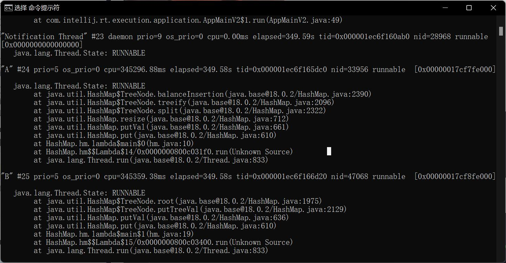
可以发现，线程AB都在执行，而main线程在为这两个线程礼让，即
while (Thread.activeCount() > 2){
Thread.yield();
}
所以，1.8的HashMap也存在死循环问题。
原理
在A线程中，线程A对链表进行树化，线程B已经开始设置根节点。此时两条线程并发，数据结构被破坏。一个线程(B)进行树化将链表转为了红黑树，由于另一条线程(A)没有知晓数据结构改变，继续试图将链表转化为红黑树，但此时数据结构改变，所以A操作失败。但A已经改变了数据结构，父节点已不正确，所以线程B也修改失败。线程A和B不断尝试树化数据，但无法成功，此时形成死循环。
线程安全问题的解决
Collections.synchronizedMap转换
Map<String, String> map = new HashMap<>();
map = Collections.synchronizedMap(map);
Collections.synchronizedMap()会生成一个同步的Map。
public static <K,V> Map<K,V> synchronizedMap(Map<K,V> m) {
return new SynchronizedMap<>(m);
}
final Object mutex; // Object on which to synchronize
SynchronizedMap(Map<K,V> m) {
this.m = Objects.requireNonNull(m);
mutex = this;
}
本质上，其维护了一个普通的map和一个对象排斥锁mutex。
其各种不安全方法都会先加锁再访问，例如：
public V get(Object key) {
synchronized (mutex) {return m.get(key);}
}
public V put(K key, V value) {
synchronized (mutex) {return m.put(key, value);}
}
public V remove(Object key) {
synchronized (mutex) {return m.remove(key);}
}
ConcurrentHashMap构造
ConcurrentHashMap<String, String> map = new ConcurrentHashMap<>();
具体实现原理请见此处。
啊我还没写呢。。。。
使用HashTable
Hashtable<String, String> map = new Hashtable<>();
具体实现原理请见此处。
LinkedHashMap
使用
HashMap<String, String> hmap = new HashMap<>();
hmap.put("nihao1", "hello");
hmap.put("nihao2", "hello");
hmap.put("nihao3", "hello");
System.out.println(hmap); // -> {nihao3=hello, nihao2=hello, nihao1=hello}
LinkedHashMap<String, String> lhmap = new LinkedHashMap<>();
lhmap.put("nihao1", "hello");
lhmap.put("nihao2", "hello");
lhmap.put("nihao3", "hello");
lhmap.get("nihao1");
System.out.println(lhmap); // -> {nihao1=hello, nihao2=hello, nihao3=hello}
lhmap.forEach((key, value) -> {
System.out.println(key + "->" + value);
/*
nihao1->hello
nihao2->hello
nihao3->hello
*/
});
插入顺序与访问顺序
插入顺序即先插入先被遍历。
而访问顺序简单来说，即：被get()方法访问的数据放在最后。
LinkedHashMap有五个构造方法，只有最后一个构造方法可以传入排序规则，false为插入顺序，true为访问顺序。
public LinkedHashMap(int initialCapacity, float loadFactor) {
super(initialCapacity, loadFactor);
accessOrder = false;
}
public LinkedHashMap(int initialCapacity) {
super(initialCapacity);
accessOrder = false;
}
public LinkedHashMap() {
super();
accessOrder = false;
}
public LinkedHashMap(Map<? extends K, ? extends V> m) {
super();
accessOrder = false;
putMapEntries(m, false);
}
public LinkedHashMap(int initialCapacity, //容量
float loadFactor,//负载因子
boolean accessOrder//排列规则) {
super(initialCapacity, loadFactor);
this.accessOrder = accessOrder;
}
示例：
LinkedHashMap<String, String> lhmap = new LinkedHashMap<>(16, 0.75f, true);
lhmap.put("nihao1", "hello");
lhmap.put("nihao2", "hello");
lhmap.put("nihao3", "hello");
lhmap.get("nihao1");
lhmap.forEach((key, value) -> {
System.out.println(key + "->" + value);
/*
nihao2->hello
nihao3->hello
nihao1->hello
*/
});
可以看到，被访问的键nihao1被放在了最后。
实现原理
public class LinkedHashMap<K,V>
extends HashMap<K,V>
implements Map<K,V>
LinkedHashMap继承了HashMap，实现了Map。
其维护了一个运行于所有条目的双向链表，保证了迭代顺序。
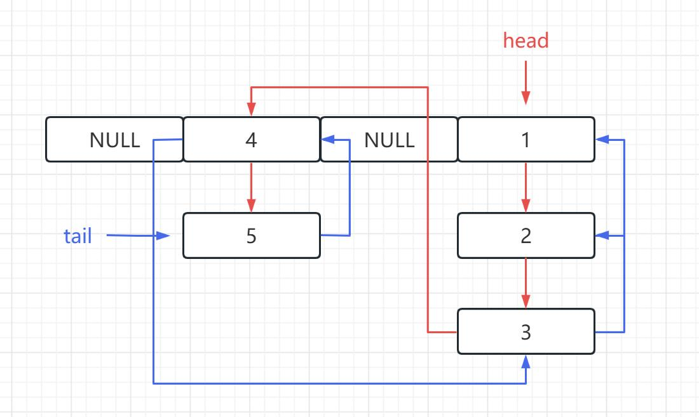
由于LinkedHashMap继承自HashMap，所以其也采用尾插法。
当1插入时，head链表指向1。
当2插入时，head链表顺序为1->2(红色箭头)；而tail链表顺序为2->1(蓝色箭头)。
以此类推得到上图。
请注意：请将head和tail两条链表与死循环分隔开，这是两条链表，而不是环状链表。
当为访问顺序时，tail链表的头部会指向访问的位置，head链表会指向访问位置的下一位。
例如，此时访问2，数据结构会变为：
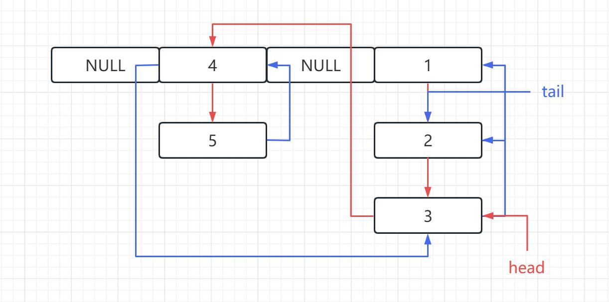
synchronizedMap
当然，既然是HashMap家族衍生而来的，就会有多线程插入数据丢失的问题。
解决方法为synchronizedMap。
Map<String, String> lhmap = new LinkedHashMap<>();
lhmap = Collections.synchronizedMap(lhmap);
lhmap.put("nihao1", "hello");
lhmap.put("nihao2", "hello");
lhmap.put("nihao3", "hello");
lhmap.forEach((key, value) -> {
System.out.println(key + "->" + value);
/*
nihao2->hello
nihao3->hello
nihao1->hello
*/
});
原理详见此处。
HashTable
与HashMap的区别
-
Hashtable在底层仍使用数组+链表的数据结构。
-
Hashtable则
不允许null作为key。if (value == null) { throw new NullPointerException(); } // put()方法 -
Hashtable
初始容量为11，每次扩容时是容量翻倍并且+1。int newCapacity = (oldCapacity << 1) + 1; -
Hashtable计算hash是直接使用key的hashcode对table数组的长度直接进行取模。(HashMap是对key的hashcode进行了二次hash，以获得更好的散列值，然后对table数组长度取模)
-
HashTable产生于JDK 1.1，而HashMap产生于JDK 1.2。
-
Hashtable是线程安全的。
Hashtable为什么线程安全？
synchronized加锁。
public synchronized V put(K key, V value) {
// Make sure the value is not null
if (value == null) {
throw new NullPointerException();
}
...
}
public synchronized V get(Object key) {
Entry<?,?> tab[] = table;
...
return null;
}
public synchronized boolean containsKey(Object key) {
Entry<?,?> tab[] = table;
...
}
......
不要在正式代码中使用Hashtable
节选自JDK1.8中Hashtable类注释。
If a thread-safe implementation is not needed, it is recommended to use HashMap in place of Hashtable. If a thread-safe highly-concurrent implementation is desired, then it is recommended to use java.util.concurrent.ConcurrentHashMap in place of Hashtable.
如果不需要线程安全实现，建议使用HashMap代替Hashtable。如果需要线程安全的高并发实现，那么建议使用java.util.concurrent.ConcurrentHashMap来代替Hashtable。
HashSet
HashSet是HashMap的衍生类。它储存一个无序、不重复的集合，底层由HashMap实现。
数据结构
HashSet在内部维护了一个HashMap：
private transient HashMap<E,Object> map;
public HashSet() {
map = new HashMap<>();
}
并且许多方法直接调用HashMap：
public Iterator<E> iterator() {
return map.keySet().iterator();
}
public boolean isEmpty() {
return map.isEmpty();
}
public boolean add(E e) {
return map.put(e, PRESENT)==null;
}
其中，HashSet存储的值即为HashMap的key。
HashSet问题
底层HashMap中的V为什么有且是一个Object对象常量，为什么不用null？
首先要解释为什么V需要一个对象。
在HashMap的put源码中，最后插入成功会返回null：
// HashMap插入
final V putVal(int hash, K key, V value, boolean onlyIfAbsent,
boolean evict) {
...
++modCount;
if (++size > threshold)
resize();
afterNodeInsertion(evict);
return null;
}
// HashSet
public boolean add(E e) {
return map.put(e, PRESENT)==null;
}
由此，如果有一个新数据成功插入，则会返回true，反之则会返回false。
之后，我们要看为什么不直接使用null。
// HashMap删除
public V remove(Object key) {
Node<K,V> e;
return (e = removeNode(hash(key), key, null, false, true)) == null ?
null : e.value; // 如果removeNode()结果为null，则返回null，否则返回value。
}
final Node<K,V> removeNode(int hash, Object key, Object value,
boolean matchValue, boolean movable) {
...
...
return node; // 正常删除返回node，否则返回null。
}
}
return null;
}
// HashSet
public boolean remove(Object o) {
return map.remove(o)==PRESENT;
}
可知，如果以null作为值，则删除时无论是否成功都为null，造成了歧义，这是不被允许的。所以不应该使用null作为值。
HashSet线程不安全
HashSet底层由HashMap实现，所以HashMap的线程不安全同样会表现在HashSet上。
解决方法
Collections.synchronizedSet()
Set<Object> set = Collections.synchronizedSet(new HashSet<>());
原理与synchronizedMap相同。
CopyOnWriteArraySet
Set<Object> set = new CopyOnWriteArraySet<>();
CopyOnWriteArraySet内部维护了CopyOnWriteArrayList，多数方法由其实现：
private final CopyOnWriteArrayList<E> al;
public boolean add(E e) {
return al.addIfAbsent(e);
}
public int size() {
return al.size();
}
public boolean isEmpty() {
return al.isEmpty();
}
public boolean contains(Object o) {
return al.contains(o);
}
其中CopyOnWriteArrayList原理为在写入时加锁。
public E set(int index, E element) {
final ReentrantLock lock = this.lock;
lock.lock();
try {
...
} finally {
lock.unlock();
}
}